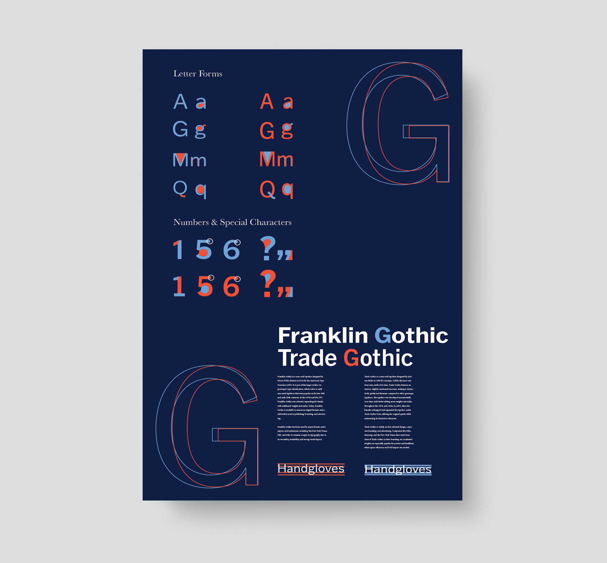

Student Work
As a Graphic Communication major at Cal Poly, I combined creativity with technical skills to bring ideas to life in both digital and print formats. Concentrating in Design Reproduction Technology, I blended graphic design, typography, branding, color theory, and quality control—focusing on designs for print, packaging, and digital media.

Type Comparison Poster
This assignment asked me to select two contrasting fonts and create a design to highlight their similarities and differences. The project involved analyzing characteristics like weight, style, and spacing, and showcasing how they could complement or contrast within a layout.

Recipe Book
In GRC 318, Digital Typography, we explored typography through modern tools for print and digital publishing. I designed a set of recipe pages printed as a small booklet, including moodboarding, layout drafts, food photography